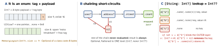

swift · folio
In one line: T? is sugar for the stdlib enum Optional<Wrapped> { case none; case some(Wrapped) };
nil is .none via ExpressibleByNilLiteral. Absence is part of the
type, so the compiler forces you to unwrap — binding, chaining, ??, map, pattern
matching — and ! is an explicit bet that traps on nil.
Download PDF Print view LaTeX source


How it works
- Binding:
if let x = opt,guard let x = opt else { return }(xstays in scope after the guard). Swift 5.7 shorthand (SE-0345):if let x {}/guard let x else {}=if let x = x. Binds an immutable non-optional;if varfor a mutable copy. - Chaining
a?.b?.c(): firstnilstops the rest (incl. argument evaluation); the result isT?. AVoidmethod givesVoid?— compare tonilto know if it ran;a?.x = 5also returnsVoid?. ??:func ??<T>(T?, @autoclosure () throws(+ an overload returning->T) rethrows->TT?). Right side evaluated only if nil; right-associative:a ?? b ?? c=a ?? (b ?? c).!traps: “Fatal error: Unexpectedly found nil while unwrapping an Optional value” (EXC_BREAKPOINTon arm64). Only for invariants: a literalURL(string:)!, a bundled resource.- IUO
T!(SE-0054, Swift 4.2) is not a type: it isOptional<T>+ an attribute “force at use if needed”.let y = iuoinfersy: T?; only a use needingTforces. For late-set-but-always-there values:@IBOutlet, UIKitwindow. map(T)→->UU?;flatMap(T)→->U?U?(noU??).s.map { Int($0) }isInt??;flatMapgivesInt?.try?flattens since Swift 5 (SE-0230):try?onthrowsis->Int?Int?(Swift 4:Int??).- Conformances:
Optionalis Equatable/Hashable/Codable whenWrappedis — but never Comparable: no<onInt?.
Example — every unwrap
func greet(_ name: String?) -> String {
guard let name else { return "anon" } // 5.7 shorthand
return "hi " + name // name: String
}
let n: Int? = Int("42") // failable init
let a = n ?? 0 // Int
let b = n.map { $0 * 2 } // Int?
switch n {
case .some(let x) where x > 0: print(x) // enum case pattern
case let x?: print("<= 0", x) // x? == .some(x)
case nil: print("none") // == .none
}
for case let id? in [1, nil, 3] { } // skips nils
if case .some(let x) = n { print(x) }Optional ≠ ownership
var d: Delegate?is a strong reference — “optional” says may be absent, not does not retain.weak varmust beOptional(var) because ARC sets it tonilon dealloc;unownedmay be optional (Swift 5) but is never nilled — access after dealloc traps.- Optional models absence;
throws/Resultmodel failure with a reason. Don’t smuggle errors intonil.
Optionals meet the APIs
compactMapdropsnils:["1","x"].compactMap(Int.init)→[1](mapwould give[Int?]).- Lookups return optionals:
first(where:),firstIndex(of:),dict[k],Array.first/last;dict[k, default: 0] += 1avoids the unwrap. - Synthesized
Codable: an optional property usesdecodeIfPresent(missing key →nil) andencodeIfPresent(nil→ key omitted, notnull). "\(opt)"printsOptional(5)+ a compiler warning — unwrap or useString(describing:)knowingly.
Traps
d["k"]?.countisInt?, notInt??— chaining flattens. But a[K: V?]subscript ISV??(panel C).if x— a check the compiler cannot see; someone removes the check later. Bind instead:!=nil { use(x!) }if let x.a ?? log()—log()does not run whenais non-nil (autoclosure). Don’t hide side effects on the right.x ?? 0 ?? 5parsesx ?? (0 ?? 5): warning, left side non-optional, the5is never used.- IUO propagation:
let y = outletisT?— the “!” is not inherited (since 4.2). try?hides which: “threw” and “returned nil” both becomenil.Bool?inif:if flagdoes not compile; writeflag == true(nil → false) deliberately.